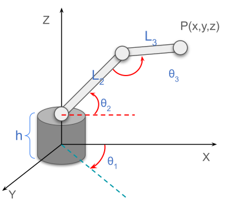
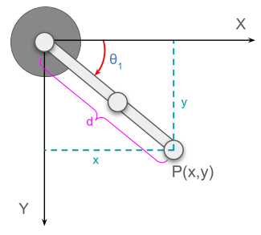
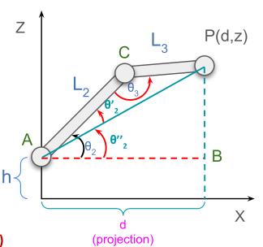
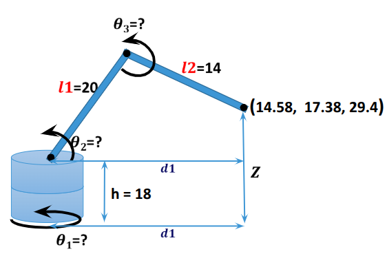
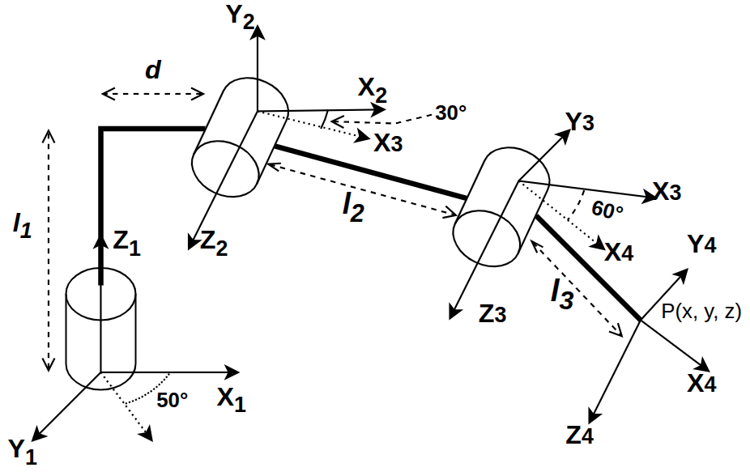
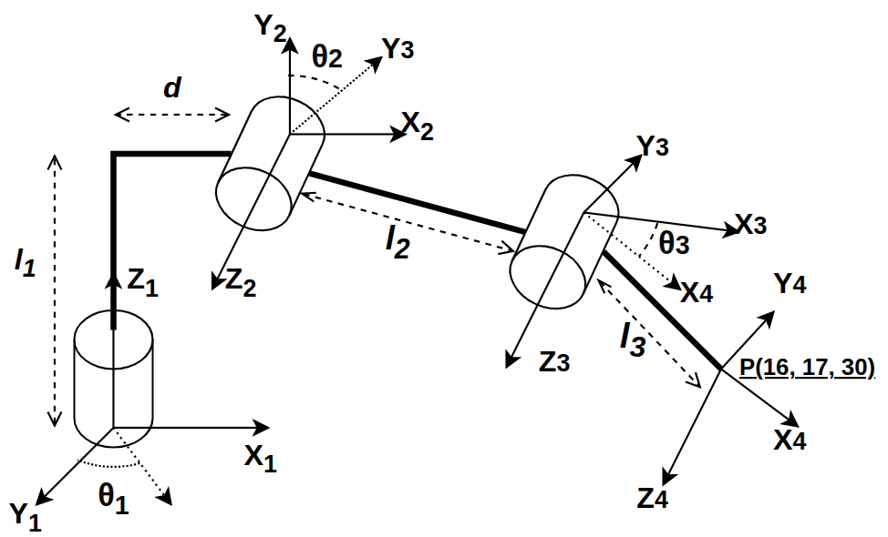

Chapter 2 – Inverse Kinematics using Trigonometry¶
Inverse kinematics answers the opposite question of forward kinematics:
If the end-effector position is given, what joint angles are required to reach that point?
For a 3R spatial robot, the task is:
- Input: target position \(P(x,y,z)\)
- Output: joint angles \(\theta_1,\theta_2,\theta_3\)

This robot operates in 3D space, so solving inverse kinematics directly from one 2D triangle is not enough.
To make the problem easier, we split it into two parts:
- Top View → find base rotation \(\theta_1\)
- Side View → find \(\theta_2\) and \(\theta_3\)
This is exactly the geometric idea shown in the lecture slides. :contentReference[oaicite:4]{index=4}
1. Why We Split the Problem into Two Views¶
The robot has: - one base rotation around the vertical axis - two arm links that move in a vertical plane
So it is easier to solve inverse kinematics in two stages:
Top View¶
This tells us how much the robot must rotate around the base to face the target.
Side View¶
After the base rotation is known, the remaining problem becomes a 2D geometry problem in the vertical plane.
Why this approach fits¶
The robot’s first joint controls horizontal direction, while the upper links control reach and height.
So separating the motion into these two views makes the math much simpler.
2. Step 1: Top View – Solve for \( \theta_1 \)¶

From the top view, the point \(P(x,y,z)\) is projected onto the XY plane.
In this view: - \(x\) and \(y\) are known - the horizontal projection of the arm is \(d\) - the base angle is \(\theta_1\)
From the right triangle in the XY plane:
Therefore,
We also need the projection distance \(d\), because it will be used in the side view:
Why this works¶
In the top view, the robot is only rotating about the vertical axis.
So the geometry becomes a simple 2D triangle in the XY plane.
Example¶
If the target is:
then:
and
So from the top view:
- \(\theta_1 \approx 53.13^\circ\)
- \(d = 20\)
Why this example fits¶
The top view only cares about the horizontal placement of the end-effector.
So \(x\) and \(y\) are enough to determine the base rotation and projection distance.
3. Step 2: Side View – Convert to a 2D Geometry Problem¶

Now we move to the side view.
In this view: - horizontal coordinate becomes \(d\) - vertical coordinate is \(z\) - base height is \(h\) - links are \(L_2\) and \(L_3\)
The point becomes:
We define the distance from point \(A\) to the target \(P\) as \(AP\).
From the triangle:
Since \(d^2=x^2+y^2\), this can also be written as:
Why this works¶
After solving the base angle, the remaining motion happens in one vertical plane.
So now the robot becomes a standard 2-link inverse kinematics problem.
4. Solve for \( \theta_2 \)¶
From the lecture slides, \(\theta_2\) is divided into two parts:
Where:
- \(\theta_2''\) comes from the right triangle involving \(d\) and \(z-h\)
- \(\theta_2'\) comes from the cosine rule in triangle \(CAP\)
4.1 First Part: \( \theta_2'' \)¶
From the right triangle:
So,
4.2 Second Part: \( \theta_2' \)¶
Using the cosine rule in triangle \(CAP\):
So,
4.3 Final Formula for \( \theta_2 \)¶
Therefore,
Why this split is needed¶
One part gives the direction of the line from base shoulder to the target, and the other part gives the internal geometric angle of the arm triangle.
Adding them gives the final shoulder angle.
5. Solve for \( \theta_3 \)¶
From triangle \(CAP\), again using the cosine rule:
So,
This gives the elbow angle.
6. Final Inverse Kinematics Equations¶
So the final results are:
where
These are the same inverse-kinematics formulas developed in the RK2 slides. :contentReference[oaicite:5]{index=5}
7. Worked Numerical Example¶
Given:
- \(x = 12\)
- \(y = 16\)
- \(z = 25\)
- \(h = 10\)
- \(L_2 = 15\)
- \(L_3 = 12\)
Find \(\theta_1,\theta_2,\theta_3\).
Step 1: Compute \( \theta_1 \)¶
Step 2: Compute \( d \)¶
Step 3: Compute \( AP \)¶
Step 4: Compute \( \theta_2'' \)¶
Step 5: Compute \( \theta_2' \)¶
Step 6: Compute \( \theta_2 \)¶
Step 7: Compute \( \theta_3 \)¶
Final Answer¶
So the robot joint angles required to reach \(P(12,16,25)\) are:
Practice Problems¶
Numerical 1¶
Given:
- \(x=6\)
- \(y=8\)
- \(z=18\)
- \(h=6\)
- \(L_2=10\)
- \(L_3=8\)
Find \(\theta_1,\theta_2,\theta_3\).
Answer¶
So,
Numerical 2¶
Given:
- \(x=9\)
- \(y=12\)
- \(z=20\)
- \(h=8\)
- \(L_2=14\)
- \(L_3=10\)
Find \(\theta_1,\theta_2,\theta_3\).
Answer¶
So,
Practice Problem: 3R Spatial Robot Inverse Kinematics¶
The following figure shows a 3R spatial robot manipulator.
The end-effector position is known, and the task is to determine the joint angles.

Given¶
- \(l_1 = 20\)
- \(l_2 = 14\)
- \(h = 18\)
End-effector position:
Task¶
Find the three joint angles:
Final Answer (Check Only)¶
If solved correctly, the joint angles should be:
Practice Problem: 3R Spatial Kinematics¶
The following figure shows a 3R spatial robot manipulator.
The task is to determine the forward and inverse kinematics.


End of This Section¶
Inverse kinematics maps:
So, unlike forward kinematics, where we compute position from known angles, inverse kinematics computes the required angles from a known target position.
This is why inverse kinematics is one of the most important tools in robot motion planning and control.